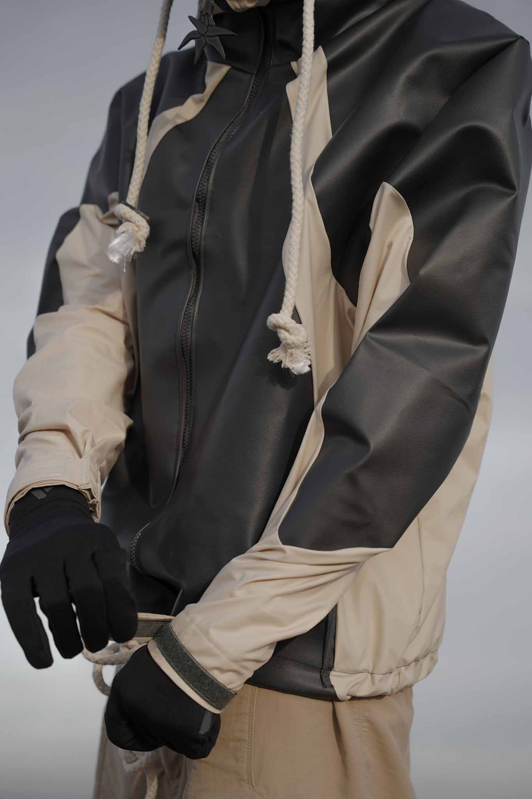
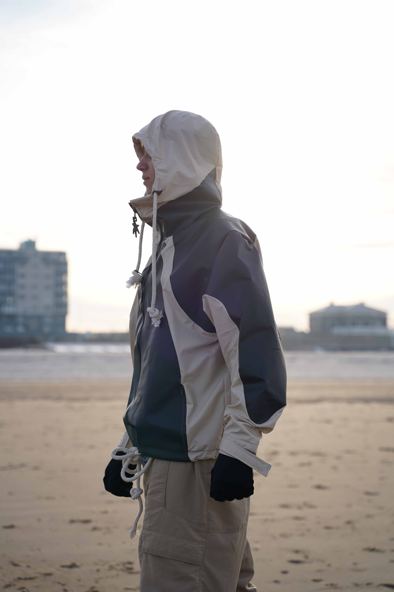

SEDUM ACRE
>PVC tarp
>nylon fabric
>3D printed details
capsule of garments made out of used industrial fabrics collected from Rotterdam harbor, Maasvlakte and its surroundings
All units in this mini collection are designed to withstand the harsh weather conditions that I experienced in this area.
The designs and unique colorways are based on the sand dunes from the beaches of the harbor. Despite the artificial nature of the main harbor area, there was still a lot of nature present all around. This blend of environments was something new and unknown for me; therefore, I tried to reinterpret this in the collection itself. While collecting samples, I keep finding fabric-like materials in the soil, such as PVC foil, polyester meshes, nylon, and knitted PE tarps buried under the sand. After I collected them I experimented with all of these fabrics through sewing, heat pressing and gluing. Some of the fabrics were unusable and dirty but after the cleaning process, PVC foil was the one I chose for the final prototypes.
To unify the whole collection under one logo I did a research about plants in this environment and choose plant named "Sedum Acre" (in Latin). It is the most original plant to the area, reflecting all the properties found in the product itself: durability, camouflage, and dynamic shapes.
This project reshaped my process of designing. I continue to use the steps I learned during my experimentation and research in this area to this day. It marked the beginning of my material library project, which I have been continuing ever since.

